✨ Mission 1: 순환계
🤔 생각 열기: 영양소와 산소는 어떻게 이동할까?
의식을 잃고 쓰러져 호흡이 없는 사람에게 왜 심폐소생술을 해야 할까요?
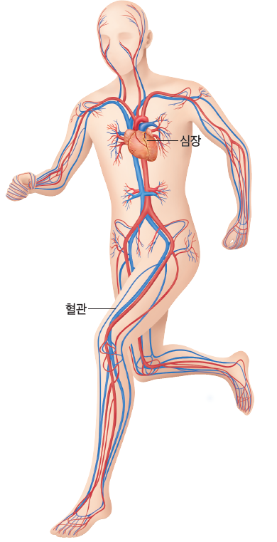
우리 몸 속의 정교하고 거대한 택배 시스템!
도로를 따라 택배 트럭이 물건을 배달하는 것처럼,
우리 몸에도 영양소와 산소를 싣고 달리는 '혈액'과
도로 역할을 하는 '혈관',
그리고 혈액을 힘차게 뿜어내는 엔진인 '심장'이 있다.
모든 세포는 매순간 이 택배 시스템으로 영양소와 산소를 공급받아야 에너지를 내서 살 수 있으므로
심장이 멈추면 심폐소생술로 강제로라도 이 택배 시스템을 지탱시키는 것이다.
- • ( ) : 물질을 운반하는 기관계
- • ( ), ( ), ( ) 으로 구성
✨ Mission 2: 심장
👁️ Step 1. 심장의 모습 관찰하기
Q. 심장은 주먹만한 크기로 개의 심방과 개의 심실로 되어 있다.
🩺 Step 2. 심장의 구조와 명칭 맞추기
화면의 오른쪽이 심장의 왼쪽(좌), 왼쪽이 심장의 오른쪽(우) 입니다.
우측의 명칭들을 심장의 알맞은 빈칸에 드래그하여 완성해보세요!
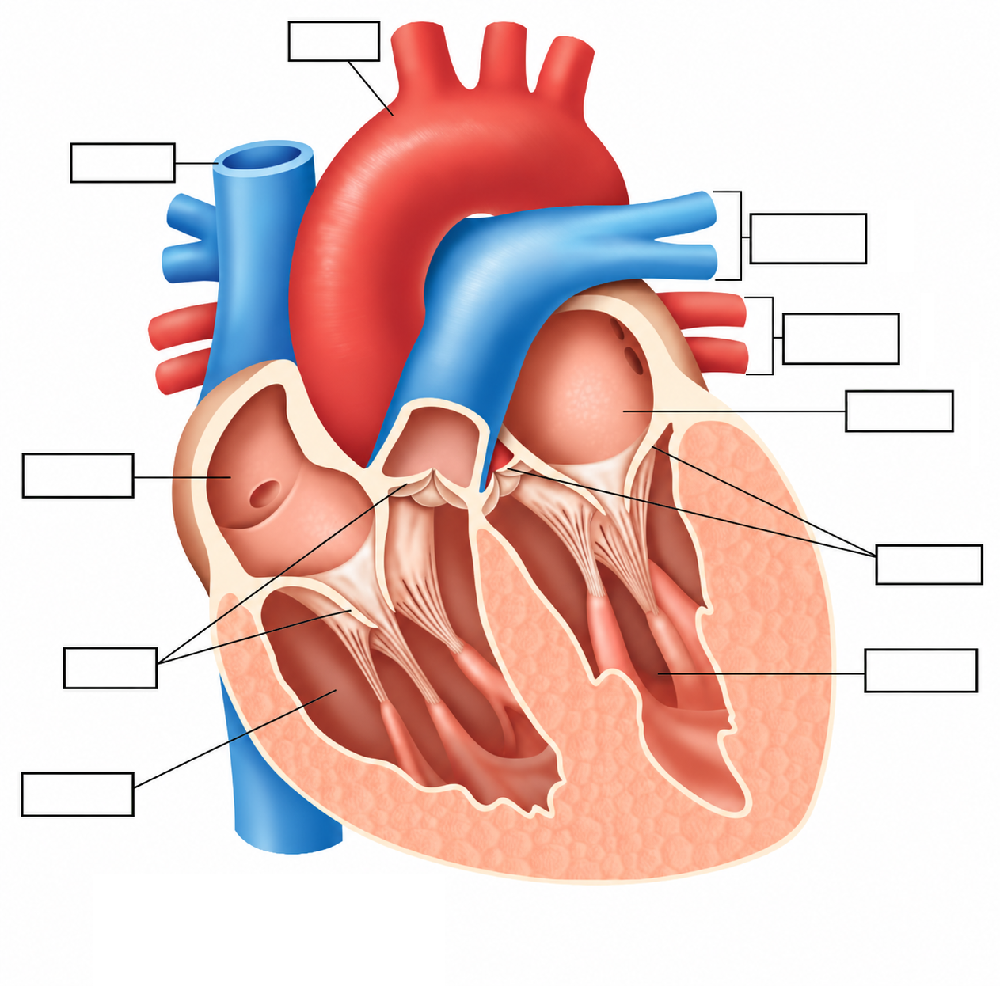
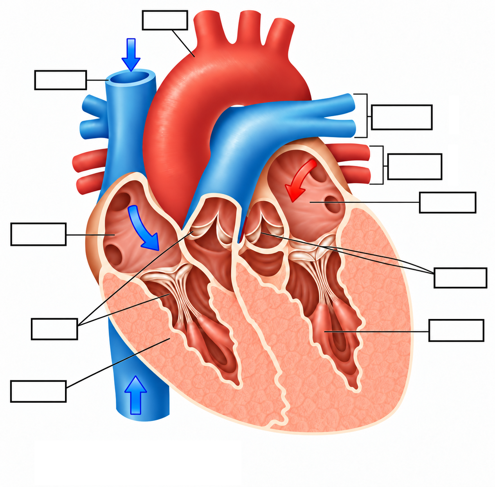
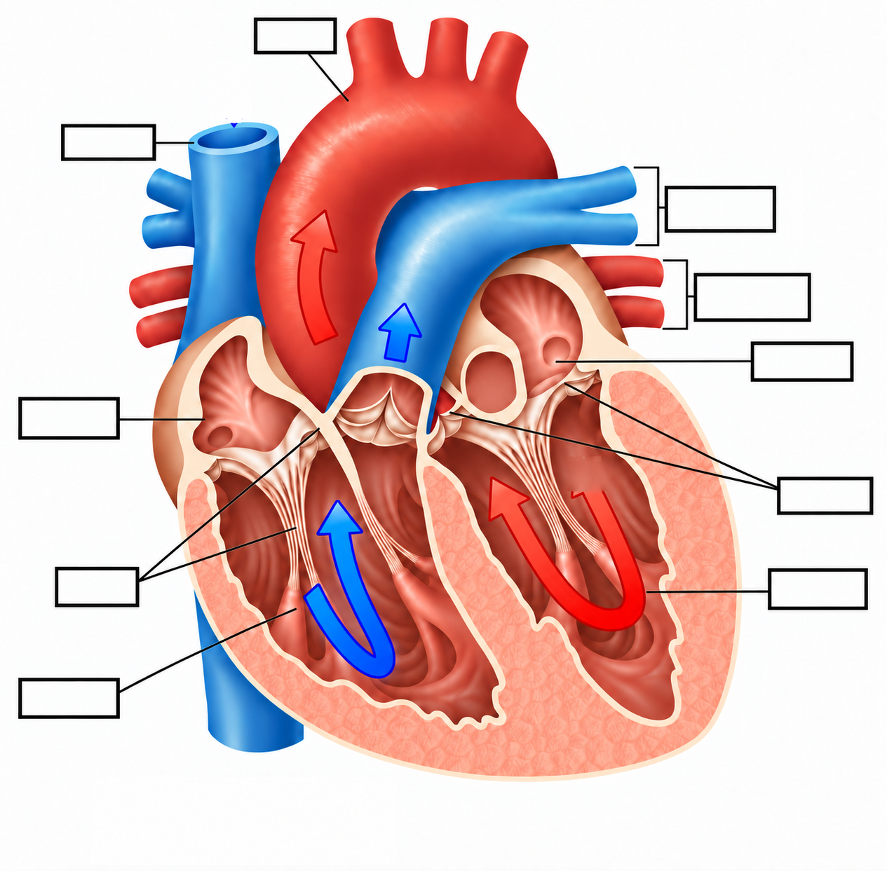
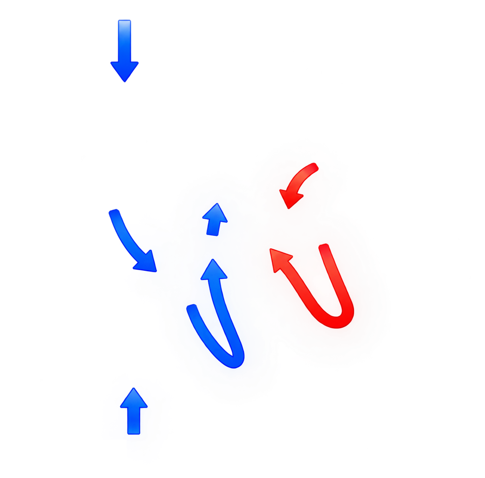
🎉 완벽합니다! 심장의 움직임을 직접 체험해보세요.
🚨 리듬에 맞춰 심장 이미지를 탭(클릭) 해보세요! 🚨
✍️ 내용 정리
❤️ 은(는) 혈액을 심장으로 받아들이는 곳으로 이(가) 연결되어 있다. ❤️ 은(는) 혈액을 심장에서 내보내는 곳으로 이(가) 연결되어 있다. ❤️ 은(는) 혈액이 거꾸로 흐르는 것을 막아준다.
🔄 Step 3. 심장 방/실 특징 확인
각 심장 부위를 클릭하면
자세한 설명이 나옵니다.
📝 시뮬레이션 확인 퀴즈
🏆 Step 4. 심장 구조 총정리
아래 단어들을 표의 알맞은 곳에 드래그하여 설명을 완성해보세요.
| 구분 | 명칭 | 특징 |
|---|---|---|
| 심방 | 좌심방 | 허파를 지나온 산소의 농도가 혈액이 을(를) 통해 들어온다. 수축하여 혈액을 (으)로 보낸다. |
| 우심방 | 온몸을 지나온 산소의 농도가 혈액이 을(를) 통해 들어온다. 수축하여 혈액을 (으)로 보낸다. | |
| 심실 | 좌심실 | 에서 혈액이 들어오면 하여 을(를) 통해 (으)로 혈액을 내보낸다. |
| 우심실 | 에서 혈액이 들어오면 하여 을(를) 통해 (으)로 혈액을 내보낸다. |
✨ Mission 3: 혈관과 혈액
🔍 Step 1. 혈관의 구성
심장에서 나온 혈액은 어디로 갈까?
심장에서 나온 혈액은 온몸에 퍼져 있는 을(를) 따라 이동한다.
혈관은 , , (으)로 구분된다.
🩸 Step 2. 혈관의 종류와 특징

✍️ 각 혈관의 특징 정리
- 심장에서 나가는 혈액이 흐르며, 혈압을 견디기 위해 혈관벽이 두껍고 탄력성이 크다.
- 심장으로 들어오는 혈액이 흐르며, 혈압이 매우 낮아 피가 거꾸로 흐르는 것을 막는 판막이 있다.
- 혈관벽이 한 겹의 세포로 매우 얇게 되어 있어 주변 조직 세포와 물질 교환이 일어난다.
🔬 Step 3. 혈액의 구성
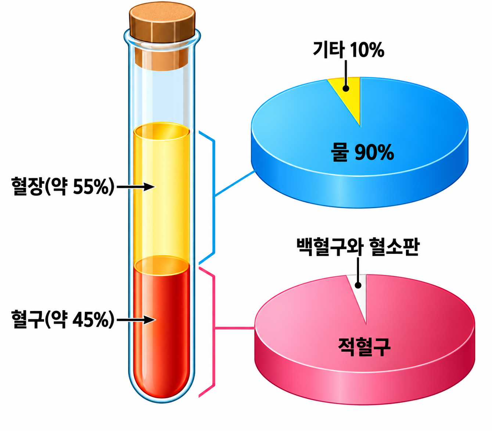
알맞은 단어 카드를 드래그하여 완성해 보세요!
(드래그 앤 드롭)
- ❤️ 혈액은 액체 성분인 과(와) 세포 성분인 (으)로 이루어져 있다.
- ❤️ 혈장은 대부분 (으)로 이루어져 있고, 영양소, 이산화 탄소, 노폐물 등이 들어 있어 이러한 물질을 운반한다.
- ❤️ 혈구는 , , (으)로 구분된다.
🩸 Step 4. 혈구 내용 정리 및 활약상
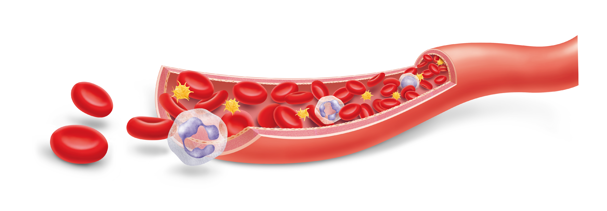
✍️ 혈구 특징 정리하기
아래 단어 카드를 빈칸에 드래그하여 표를 완성해보세요.
| 혈구 이름 | 특징 | 작용 |
|---|---|---|
| 적혈구 |
혈구 중에서 수가 가장 , 가운데가 오목한 원반 모양, 핵이 , 적혈구 속에 헤모글로빈이라는 붉은 색 색소가 산소와 결합하여 혈액이 붉게 보임. |
산소 운반 작용 |
| 백혈구 |
혈구 중 크기가 가장 , 모양이 일정하지 않고, 핵이 . |
식균 작용, 면역 작용 |
| 혈소판 |
혈구 중 크기가 가장 , 모양이 일정하지 않다. 핵이 . |
혈액 응고 작용 |
우리의 일상생활 속 경험과 3가지 혈구의 역할을 연결해 볼까요?
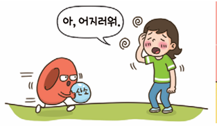
적혈구 (산소 운반)
"갑자기 일어날 때 머리가 핑~ 도는 어지러움을 느낀 적 있나요?"
적혈구가 부족해서 뇌로 가는 산소가 모자랄 때 발생하는 빈혈 증상입니다.
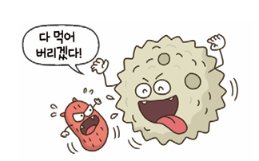
백혈구 (식균 작용)
"상처가 난 곳이 퉁퉁 붓고 노란 고름이 생긴 적 있나요?"
백혈구가 우리 몸에 들어온 세균과 치열하게 싸우다 장렬히 전사한 흔적이 바로 고름입니다.
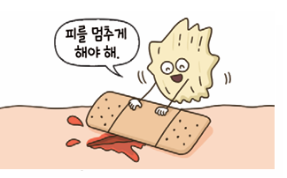
혈소판 (혈액 응고)
"넘어져서 피가 나다가 딱지가 앉은 적 있나요?"
혈소판이 상처 부위에서 혈액을 굳게 만들어 피를 멈추게 한 딱지 방패입니다.
📝 혈구 삼총사 퀴즈
우리가 상처가 나서 피가 날 때, 가장 먼저 달려와 반창고 역할을 해주는 혈구는 무엇일까요?
🏆 Mission 4: 혈액 순환
🔍 Step 1. 심장과 혈액의 순환 경로 그리기
좌심실에서 출발하여 온몸을 돌고, 다시 허파를 거쳐 돌아오는 순서를 직접 클릭하여 그려보세요!
(오른쪽 교과서 모식도를 참고하여 왼쪽 인터랙티브 도형을 클릭하면 색이 채워집니다.)
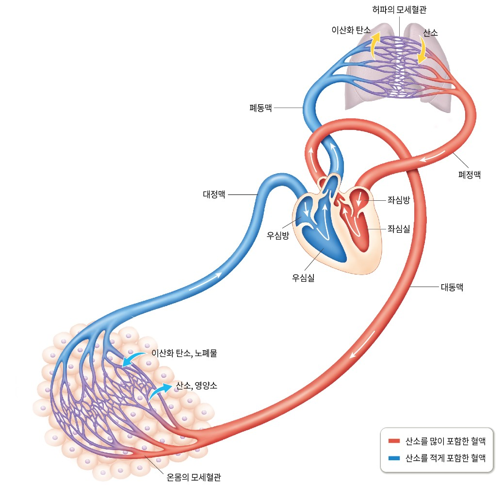
🔄 Step 2. 혈액 순환 경로 완성하기
알맞은 단어 카드를 드래그하여 두 가지 순환 경로를 완성해 보세요.
🔴 온몸순환 (체순환)
🔵 허파순환 (폐순환)
🎉 QUEST 3 완벽 정복! 🎉
생명을 구한 여러분, 위대한 시민상을 수여합니다!